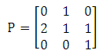
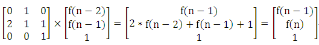
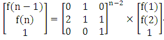

应用矩阵快速幂运算可以解决递推问题。在实际应用中，有时候题目并没有直接给出递推式，需要认真分析问题，找出递推式，然后再利用矩阵快速幂运算加快问题的求解。
【例1】程序阅读理解。
有如下的C语言程序：
#include <stdio.h>
int main()
{
int n,m,f,i;
while(scanf("%d%d",&n,&m)!=EOF)
{
f=0;
for(i=1;i<=n;i++)
{
if (i&1)f=(f*2+1)%m;
else f=f*2%m;
}
printf("%d\n",f);
}
return 0;
}
阅读上面的程序，根据输入的n和m，写出程序运行的结果。例如，输入 3 10，输出应为5。
但由于给定输入的n和m的数据范围为1<=n, m <= 1000000000，且测试集中数据量较大，因此如果直接将给定的程序提交会超时的。请你编写一个程序，能根据输入的n和m快速完成问题的求解，以实现给定程序的功能。
（1）编程思路。
给定程序段实际是通过迭代的方式求f(n)%m的值。先不考虑求余，找到f(n)的求法。
分析给定程序知，f(0)=0， 当 n为奇数时，f(n)=2*f(n-1)+1；当n为偶数时，f(n)=2*f(n-1)。
下面进一步分析，找到不考虑n的奇偶性的一个统一的递推式。
当 n为奇数时，f(n)=2*f(n-1)+1，n-1一定为偶数，f(n-1)=2*f(n-2)。因此，
f(n)=f(n-1)+f(n-1)+1=2*f(n-2)+f(n-1)+1。
当 n为偶数时，f(n)=2*f(n-1)，n-1一定为奇数，f(n-1)=2*f(n-2)+1。因此，
f(n)=f(n-1)+f(n-1)=2*f(n-2)+f(n-1)+1。
由此，得到统一的递推式： f(0)=0，f(1)=1， f(n)=2*f(n-2)+f(n-1)+1 (n>=3)。
确定了递推式后，可以构造矩阵P，进行快速幂运算求解。



（2）源程序。
#include <stdio.h>
#include <string.h>
struct Matrix
{
__int64 mat[4][4]; // 存储矩阵中各元素
};
Matrix matMul(Matrix a ,Matrix b,int n,int m)
{
Matrix c;
memset(c.mat,0,sizeof(c.mat));
int i,j,k;
for (k = 1; k<=n ; k++)
for (i=1 ;i<=n ; i++)
if (a.mat[i][k]!=0)
for (j = 1 ;j<=n ;j++)
c.mat[i][j] = (c.mat[i][j] + a.mat[i][k] * b.mat[k][j]) % m;
return c;
}
Matrix quickMatPow(Matrix a ,int n,int b,int m) // n阶矩阵a快速b次幂
{
Matrix c;
memset(c.mat ,0 ,sizeof(c.mat));
int i;
for (i = 1 ;i <= n ;i++)
c.mat[i][i] = 1;
while (b!=0)
{
if (b & 1)
c = matMul(c ,a ,n,m); // c=c*a;
a = matMul(a ,a ,n,m); // a=a*a
b /= 2;
}
return c;
}
int main()
{
int n,m;
__int64 ans;
Matrix p;
while(scanf("%d%d" ,&n,&m)!=EOF)
{
memset(p.mat,0,sizeof(p.mat));
p.mat[2][1]=2;
p.mat[1][2]=p.mat[2][2]=1;
p.mat[2][3]=p.mat[3][3]=1;
if (n<3)
printf("%d\n",n%m);
else
{
p = quickMatPow(p,3,n-2,m);
ans=p.mat[2][1]% m;
ans=(ans+p.mat[2][2]*2)% m;
ans=(ans+p.mat[2][3])% m;
printf("%I64d\n" ,ans);
}
}
return 0;
}
将此源程序提交给HDU 4990 “Reading comprehension”，可以Accepted。
【例2】将灯全熄灭。
有n个灯排成一行，初始时是全亮的，第一个灯可以按（按下之后改变状态）。然后如果前k个灯全熄灭且第k+1个灯亮，则第k+2个灯可以按。问至少要多少步灭掉所有灯？
例如，n=2时，需要2歩。第1歩灭掉2号灯，第2歩灭掉1号灯。n=3时，需要5歩。第1歩灭掉1号灯，第2歩灭掉3号灯，第3歩点亮1号灯（注意1号灯不点亮，不能直接灭2号灯），第4歩灭掉2号灯，第5歩灭掉1号灯。
（1）编程思路。
设f[n]代表n个全亮的灯变成全熄灭所需的最少步数，也可以代表n个全熄灭的灯变成全点亮所需的最少步数。
1）要想灭掉最后一个灯，得先灭掉前n-2个灯（第n-1个灯留亮），需要步数 f[n-2]+1。
2）要想灭掉第n-1个灯，得先让第n-2个灯变回亮，要第n-2个灯变回亮，得先让第n-3个灯变回亮...即要把前n-2个灯都变回亮，需要步数 f[n-2]。
3）把前n-2个灯变回亮后，就剩下前n-1个灯都是亮的，即剩下的任务就是把n-1个灯灭掉，需要步数 f[n-1]。
综上所述：f[n] = 2*f[n-2] + f[n-1] + 1。 （n>=3） f[1]=1，f[2]=2。
（2）源程序。
#include <stdio.h>
#include <string.h>
#define MOD 200907
struct Matrix
{
__int64 mat[4][4]; // 存储矩阵中各元素
};
Matrix matMul(Matrix a ,Matrix b,int n)
{
Matrix c;
memset(c.mat,0,sizeof(c.mat));
int i,j,k;
for (k = 1; k<=n ; k++)
for (i=1 ;i<=n ; i++)
if (a.mat[i][k]!=0)
for (j = 1 ;j<=n ;j++)
c.mat[i][j] = (c.mat[i][j] + a.mat[i][k] * b.mat[k][j]) % MOD;
return c;
}
Matrix quickMatPow(Matrix a ,int n,int b) // n阶矩阵a快速b次幂
{
Matrix c;
memset(c.mat ,0 ,sizeof(c.mat));
int i;
for (i = 1 ;i <= n ;i++)
c.mat[i][i] = 1;
while (b!=0)
{
if (b & 1)
c = matMul(c ,a ,n); // c=c*a;
a = matMul(a ,a ,n); // a=a*a
b /= 2;
}
return c;
}
int main()
{
int n;
__int64 ans;
Matrix p;
while(scanf("%d" ,&n) && n!=0)
{
memset(p.mat,0,sizeof(p.mat));
p.mat[1][2]=2;
p.mat[1][1]=p.mat[1][3]=1;
p.mat[2][1]=p.mat[3][3]=1;
if (n<3)
printf("%d\n",n%MOD);
else
{
p = quickMatPow(p,3,n-2);
ans=(p.mat[1][1]*2+p.mat[1][2]+p.mat[1][3])%MOD;
printf("%I64d\n" ,ans);
}
}
return 0;
}
将此源程序提交给HDU 2842 “Chinese Rings”，可以Accepted。